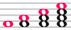

Minerva - Whitacre - Alto 1 (alto 1 when divided into 4 parts) = 
Reset all
If you find mistakes or have problems or comments please email: andrea@tealapps.com (= Andrea in the alto2's of Minerva Choir).
It seems to be working on Windows Chrome, MS Edge, Firefox, Android, iPhone, iPad, Safari, but not on IExplorer.